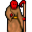

Kha'zaan Porter¶| Stat | Value |
|---|---|
| Class | undead |
| HP | 0 |
| Max AP | 10 |
| Attack cost | 10 |
| Move cost | 10 |
| Damage | 0 |
| Attack chance | 0 |
| Block chance | 0 |
| Damage resistance | 0 |
| Critical skill | 0 |
| Critical multiplier | 0 |
Found on¶
Dialogue (26 lines)
What the dialogue says, exactly as in the game files. Lines are listed once; links jump to the line a choice leads to.
porter_selector (silent check: the first matching branch below is taken)
- branch 1 (if reached stage 78 of hidden_undertell (hidden flag)) → leave_archival_room_key_selector
- branch 2 (if NOT reached stage 50 of About a girl) → porter_no_permission_10
- branch 3 (if reached stage 50 of About a girl) → porter_permission_10
leave_archival_room_key_selector (silent check: the first matching branch below is taken)
- branch 1 (if wearing Crown of studied defiance) → porter_wearing_headgear_10
- branch 2 (if carry 1× Crown of studied defiance) → porter_headgear_inventory_dc_10
- branch 3 (if reached stage 87 of hidden_undertell (hidden flag)) → porter_player_took_crown_10
- branch 4 → porter_player_does_not_have_crown_10
porter_no_permission_10 Kha'zaan Porter: “And where do you think you are headed, mortal?”
- “[while pointing straight ahead] Through that door.” → porter_no_permission_20
porter_permission_10 Kha'zaan Porter: “You may proceed, but only for what you were granted allowance for.”
- “You serve your masters well.” → conversation ends
porter_wearing_headgear_10 Kha'zaan Porter: “You should be so brazen as to walk out here wearing that. Remove it.”
- “What?” → porter_wearing_headgear_20
porter_headgear_inventory_dc_10 Kha'zaan Porter: “Wait! My friend Tocsin over hear would like to make sure that you are not trying to sneak one past us.”
- Next → porter_headgear_inventory_10
porter_player_took_crown_10 Kha'zaan Porter: “You moved restricted material and didn't put it back where you found it. Now go do so!”
porter_player_does_not_have_crown_10 Kha'zaan Porter: “You may proceed.” — effects: clears stage 86 of hidden_undertell (hidden flag), applies condition kazaul_mortality
porter_no_permission_20 Kha'zaan Porter: “I was not notified. I'm afraid that you will not be allowed to proceed.”
- “Oh, sorry about that. I will be on my way then.” → conversation ends
- “[lie] Oh, but I do have permission. One of the masters gave me permission.” (if reached stage 5 of hidden_undertell (hidden flag)) → porter_no_permission_lie_10
- “How about some gold? Let's say one-thousand pieces?” (if have 1,000 gold) → porter_no_permission_gold_10
porter_wearing_headgear_20 Kha'zaan Porter: “That crown does not leave that room. Not worn. Not carried.”
- “I am just looking at it.” → porter_wearing_headgear_30
porter_headgear_inventory_10 Kha'zaan Porter: “You are carrying restricted material.”
- “It was in the archive.” → porter_headgear_inventory_20
porter_no_permission_lie_10 Kha'zaan Porter: “Oh, which one would that be?”
- “Umm...the really wise-looking one.” → porter_no_permission_lie_20
porter_no_permission_gold_10 Kha'zaan Porter: “Sure, if you want to give away your gold, I'll take it.”
- “Here, take the thousand coins and move away.” (if pay 1,000 gold) → porter_no_permission_gold_20
porter_wearing_headgear_30 Kha'zaan Porter: “Looking was permitted. Possession was not.”
- “Fine.” → porter_force_return
porter_headgear_inventory_20 Kha'zaan Porter: “Yes. That is where it remains.”
- “So I cannot take it?” → porter_headgear_inventory_30
porter_no_permission_lie_20 Kha'zaan Porter: “Leave now before Tocsin over here has an early dinner.”
- “Calm down! I was just kidding.” → conversation ends
porter_no_permission_gold_20 Dummy NPC: “The porter takes the coins and drops them into a bag behind Tocsin.”
- Next → porter_no_permission_gold_30
porter_force_return Kha'zaan Porter: “Place it back where you found it. Then you may leave.”
- “What if I pay you to forget you saw it?” → porter_bribe_response_10
- “Fine, I will put it back.” → conversation ends
porter_headgear_inventory_30 Kha'zaan Porter: “You can return it.”
- “Understood.” → porter_force_return
porter_no_permission_gold_30 Kha'zaan Porter: “Thanks a lot! Now leave and don't come back until you are proven to be allowed entry.”
- “What!?” → porter_no_permission_gold_40
porter_bribe_response_10 Kha'zaan Porter: “Payment does not alter restriction.”
- “Everyone has a price.” → porter_bribe_response_20
porter_no_permission_gold_40 Kha'zaan Porter: “I never said I could be bought. Go now!”
porter_bribe_response_20 Kha'zaan Porter: “Ten thousand gold.”
- “Take it.” (if pay 10,000 gold) → porter_bribe_complete
- “Forget it.” → porter_force_return
porter_bribe_complete Kha'zaan Porter: “Received.”
- “Now let me pass.” → porter_bribe_denial
porter_bribe_denial Kha'zaan Porter: “No.”
- “You said ten thousand.” → porter_bribe_truth
porter_bribe_truth Kha'zaan Porter: “That was the amount.”
- “Whatever!” → conversation ends
Version history¶
| Version | Change |
|---|---|
| v0.8.18 | Added Dialogue: 26 lines added |
Verified against v0.8.18 and every earlier release back to v0.7.0 (game data compared release by release).
Community notes¶
Written by players, not generated from game data. Observations: what players notice in-game · Lore: the in-world story · Trivia: real-world facts, references, development history · Theory / speculation: unconfirmed ideas; may just be unfinished content
Observations¶
Nothing here yet. Know something? Add it.
Lore¶
Nothing here yet. Know something? Add it.
Trivia¶
Nothing here yet. Know something? Add it.
Theory / speculation¶
Nothing here yet. Know something? Add it.
Monster ID: porter · Data from v0.8.18